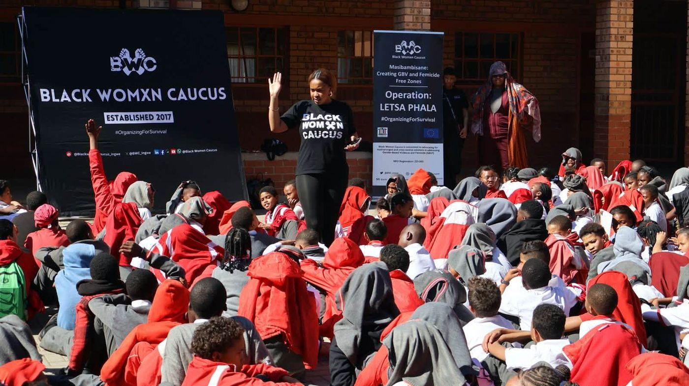
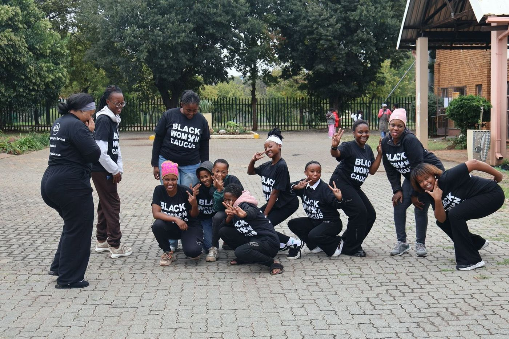
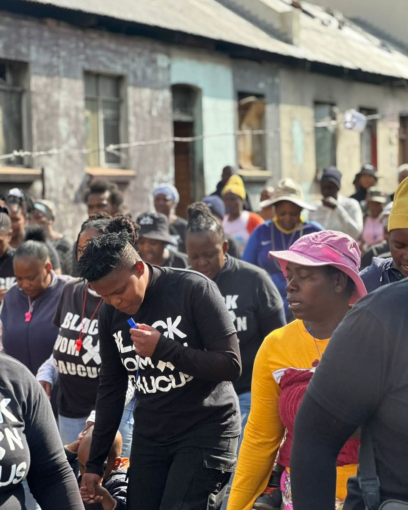
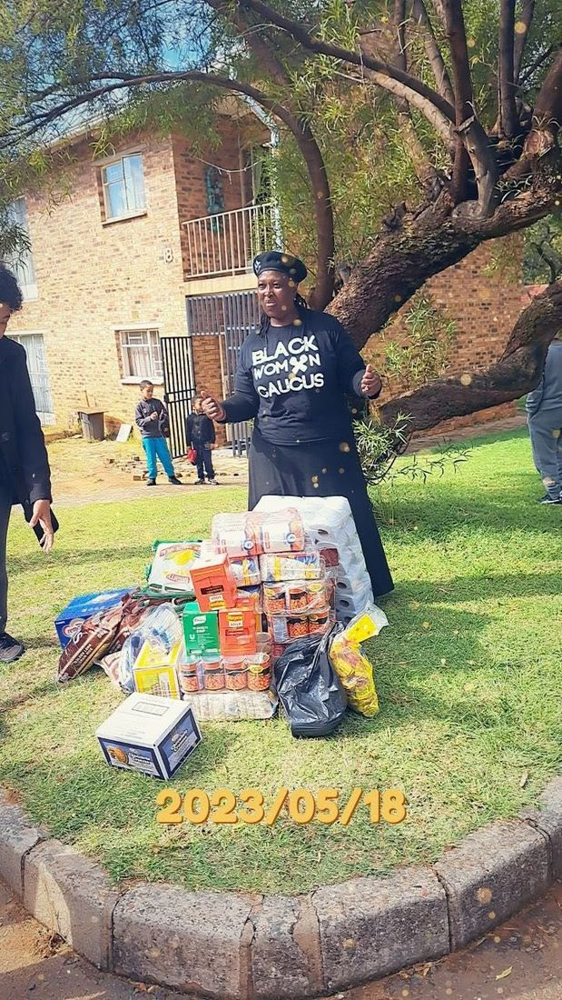
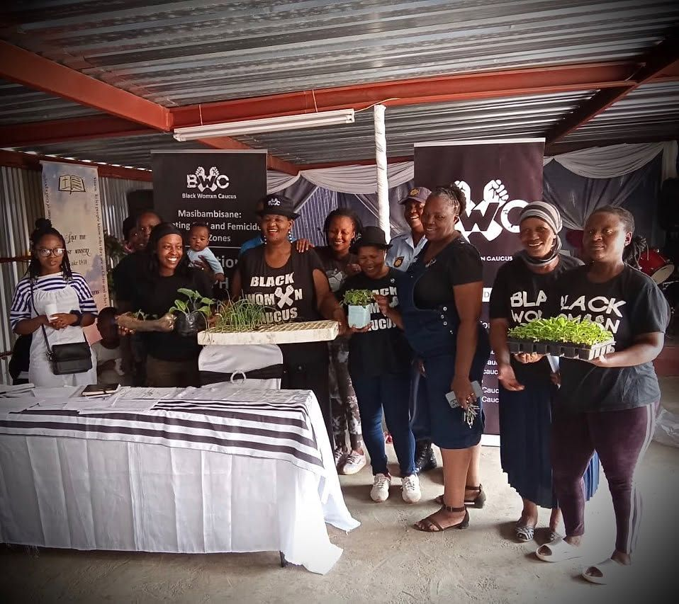
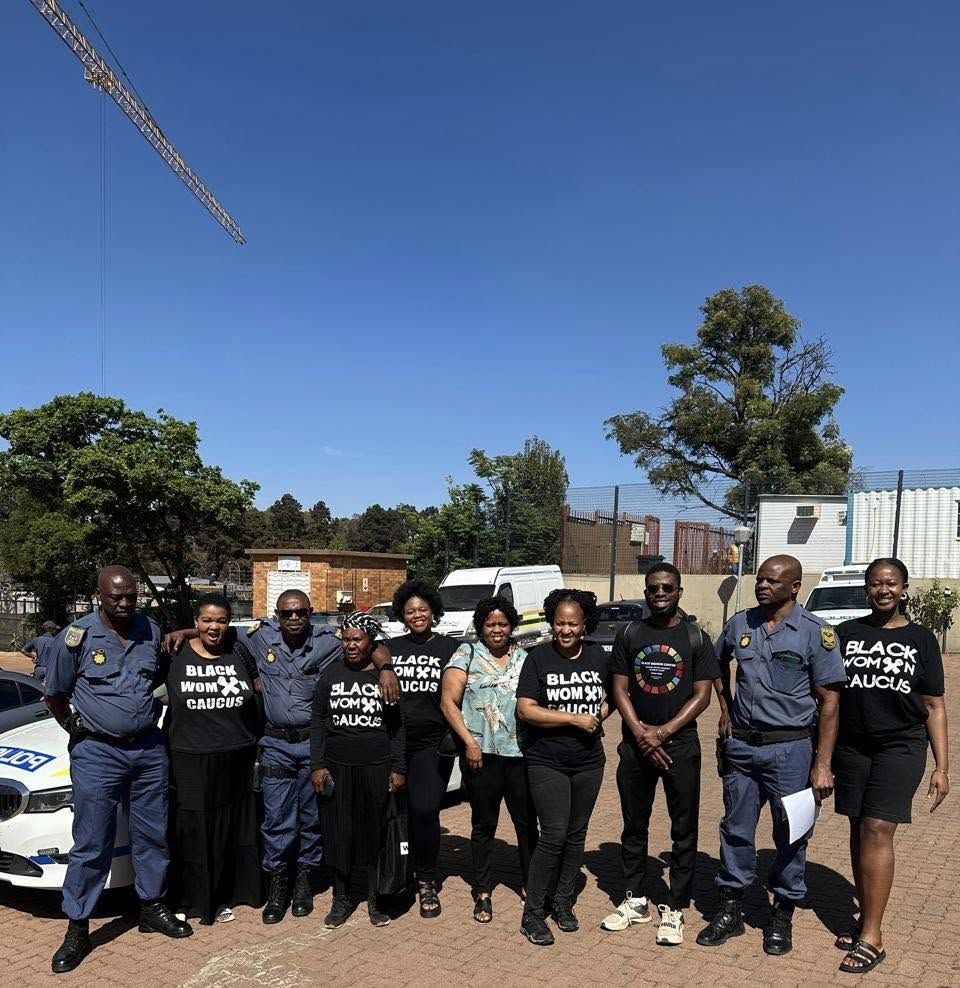
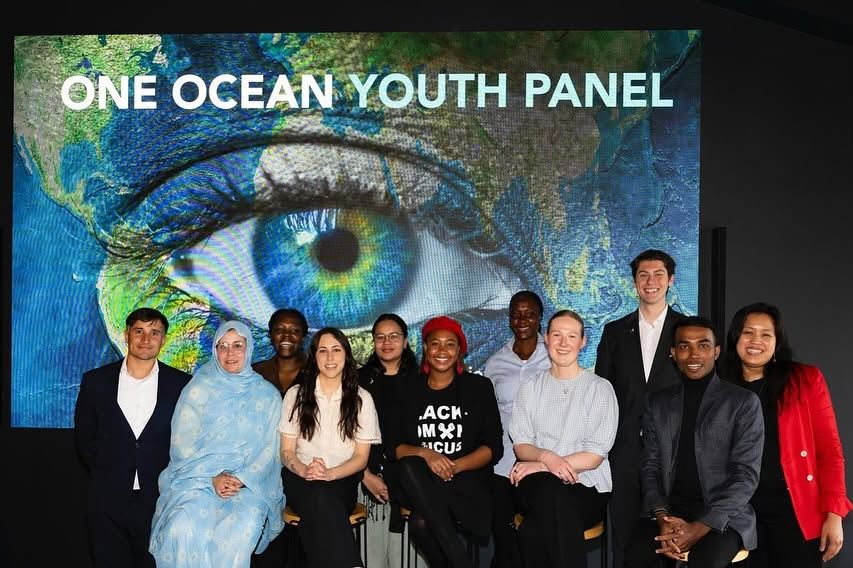

#MakeMySchoolSafe
An anti-bullying and school safety program. Fun, interactive sessions help learners understand the different forms of bullying and where to report it, so every child feels safe, respected, and supported.

Our work
Every division carries out its own campaigns and projects, in service of one broad-based feminist movement.
Ages 13–21. Empowering young minds, promoting equality, and addressing toxic norms and values through education and awareness.
An anti-bullying and school safety program. Fun, interactive sessions help learners understand the different forms of bullying and where to report it, so every child feels safe, respected, and supported.

A holistic program on mental health, sexual and reproductive health rights (SRHR) and sexual health education. Workshops, peer discussions, and expert guidance help adolescents take charge of their own health with confidence.

Impact — Thousands of children, from primary to secondary schools, have gained essential life skills through our interactive workshops.
The founding division. To cultivate feminist leadership, promote political education, and foster a community of young people equipped to drive social change and advocacy.
Leadership development and critical thinking programs, policy advocacy for gender-equitable policies, and community mobilization through events and campaigns. We organise young women in higher learning and in communities, including those not in education, employment, or training (NEET).

Impact — Over 5,000 young women have participated in leadership programs, leading to tangible changes in local communities.
Mobilising women to end violence through community-based education, economic empowerment, and active engagement. By equipping women with knowledge, skills, and support networks, we foster resilience, leadership, and collective action.
An awareness program on gender-based violence and femicide, and on the support services available.

Through monthly contributions, women pool their resources to buy groceries in bulk at the end of the year. The stockpile lasts for months, easing financial pressure and supporting food security for women and their families.

Promotes self-sufficiency through home gardening and internal trade.

Economic impact — Members report increased savings, less dependency on external support, and better knowledge of where and how to access support services when violence occurs.
Across the movement
Since the historic 2019 march to the Johannesburg Stock Exchange, we have demanded greater private-sector accountability on GBVF. #FundTheFight aims to galvanize national, regional, and continental resources for community-led interventions, led by women and feminist movements themselves.
Launched in 2023, this flagship initiative advances feminist leadership in Southern Africa by fostering youth engagement with the UN Commission on the Status of Women (CSW).
BWC is a commitment maker in three UN Action Coalitions: Gender-Based Violence, Economic Justice and Rights, and Feminist Movements and Leadership. Our Chairperson is the Co-Convenor of the Feminist Movements and Leadership Action Coalition in South Africa.
“People of the Law” strengthens the relationship between the South African Police Service (SAPS) and communities through trust, accountability, institution building, and collaboration, using feminist-led, community-centred strategies against GBVF. It works through evidence-driven advocacy, public education and training, capacity building and institutional reform, psychosocial provision, and research and policy development.

In April 2024, our young activist Rebone Chikwado was invited to Bergen, Norway to join the One Ocean Youth Panel, alongside international young activists and academics advocating for ocean conservation and sustainability. Our tyre-garden project, Operation Tshwara Letaere, drew international attention.

In March 2024, Rebone Chikwado and Naledi Nhlapo represented BWC at the CSW68 Youth and Adolescent Town Hall, a virtual consultation with UN governments, the private and public sectors, and civil society, sharing the challenges young adolescents in South Africa face.
Affiliate
#CrisisOfCare began in 2019, during COVID-19, as a free WhatsApp helpline offering accessible emotional support. It is now Crisis of Care (Pty) Ltd, a company affiliated with BWC providing psychosocial support and psycho-health services for individuals, families, organizations, and companies, plus research, advocacy, education, and training in virtual, digital, and in-person formats.
Visit the Crisis of Care website